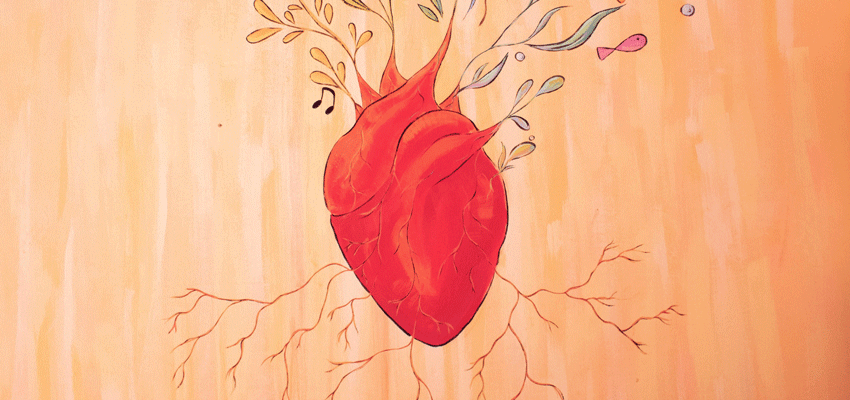
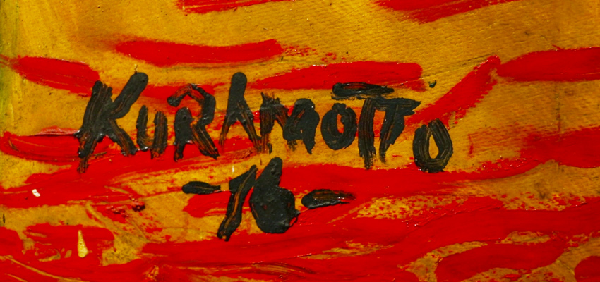

“UN BUEN MORIR – Teatro de los Andes”
El Teatro de los Andes se presento el 16 de diciembre en Santa Cruz de la Sierra con una de sus más poéticas y emocionantes obras: ”Un Buen Morir” en el Teatro del CBA.
Tuve el honor de ser nombrada la fotógrafa oficial de la presentación y ser invitada por dos revistas virtuales a escribir un par de líneas para acompañar las imágenes tomadas. Me parece pertinente aclarar que no pretendo ocupar el lugar de un crítico especializado en teatro, sino simplemente el de un espectador que comparte su experiencia traducida a un texto que intenta ser lo mas concreto y claro posible. Mi intención es contribuir a refrescar la memoria para aquellos que estuvieron allí, y despertar las ganas de ver la obra para los que aún no la vieron.
El elenco de Teatro de los Andes desplegó, como de costumbre, una puesta en escena muy poética, rica en imágenes impactantes y en textos afilados que invitaron a reflexionar acerca de una realidad que nos toca vivir a todos por igual: las relaciones de pareja.
Por qué te enamoraste de mi? -porque uno se enamora de lo imperfecto- ;
Que haremos con el gato? -pero si nunca tuvimos porque te daban alergia- ;
Y qué hacemos con los hijos? – pero si decidimos no tenerlos- ;
Puedo contar mi vida en tazas de café. El café me recuerda la fragilidad de las cosas.
Esas son algunas de las memorables frases que pronunciaron los protagonistas durante el desarrollo de la obra. Los comienzos y los finales, las despedidas, la costumbre, el tedio, el amor, el miedo a la vejez, el encuentro con la muerte.
Personalmente me queda la sensación de que la vida es corta, pasajera y no dura lo suficiente como para darse el lujo de no vivirla plenamente. Enamorarse de verdad y tomar el riesgo de navegar las – a veces apacibles y otras veces tormentosas – aguas de lo que esto significa con todas sus consecuencias, es una de esas experiencias reveladoras que, tal vez, no se debería dejar escurrir de entre los dedos tan fácilmente.
En cuanto a las imágenes de la obra, los invito a disfrutarlas ya que generalmente hablan por si solas, en su propio lenguaje silencioso.
Con texto de Alex Aillón Valverde, dirección de Elías Cohen y actuación de Gonzalo Callejas y Alice Guimarães, el espectáculo del Teatro de los Andes me dejó una vez mas gratamente sorprendida y con un gustito especial que me queda resonando en la memoria a pesar del pasar de los días y la llegada de las fiestas. Acompañemos la trayectoria de este maravilloso elenco boliviano y démosle el lugar y el apoyo que se merecen.
el espectáculo del Teatro de los Andes me dejó una vez mas gratamente sorprendida y con un gustito especial que me queda resonando en la memoria a pesar del pasar de los días y la llegada de las fiestas. Acompañemos la trayectoria de este maravilloso elenco boliviano y démosle el lugar y el apoyo que se merecen.
SHARE:
Categorías
MÚSICA 0
TEATRO 1
Publicaciones Recientes
-
 Publicado : 07/05/2019
Publicado : 07/05/2019
-
 Publicado : 10/01/2019
Publicado : 10/01/2019
-  Publicado : 27/12/2018
-
 Publicado : 19/11/2018
Publicado : 19/11/2018
-  Publicado : 18/11/2018
-
 Publicado : 12/11/2018
Publicado : 12/11/2018
-

Museo el Altillo Beni abrió sus puertas al público este 5 de noviembre
Publicado : 9/11/2018
Tags
ENTREVISTAS MUSEOS LITERATURA CCFR LITERATURA TITO KURAMOTTO TEATRO DE LOS ANDES MUSEO DE ARTE CONTEMPORÁNEO CALENDARIECITO